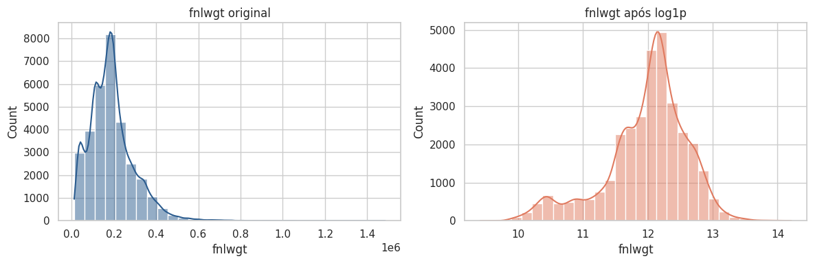
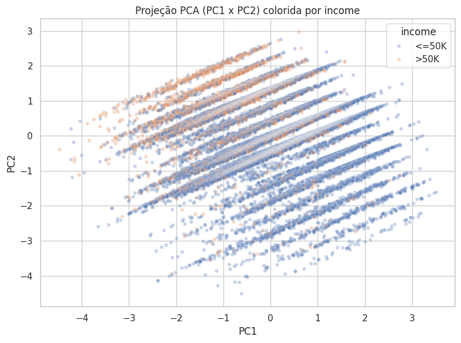

4. Pré-processamento para Modelagem¶
Com o EDA concluído, esta seção define as decisões de pré-processamento a serem aplicadas antes da modelagem, justificando cada escolha com base no que foi observado nas seções anteriores.
Separação em treino e teste¶
Antes de aplicar qualquer etapa de pré-processamento (imputação, encoding, padronização, PCA para o pipeline final), os dados são separados em treino e teste. A ordem importa: a análise exploratória foi feita sobre o dataset completo (o que não é um problema, pois é apenas observação), mas a partir daqui são ajustados imputadores, encoders e StandardScaler — e esse ajuste não pode "enxergar" o conjunto de teste, senão estatísticas do teste (média, desvio padrão, categorias mais frequentes) vazariam para o treino (data leakage), inflando artificialmente a performance dos modelos nas fases seguintes.
Foi usado stratify=y para manter a mesma proporção de income em treino e teste, já que o desbalanceamento de classes foi identificado na Seção 1 — sem estratificação, o split aleatório poderia acentuar ainda mais esse desbalanceamento em um dos conjuntos.
from sklearn.model_selection import train_test_split
X_full = df.drop(columns=["income"])
y_full = df["income"]
X_train, X_test, y_train, y_test = train_test_split(
X_full, y_full,
test_size=0.2,
random_state=42,
stratify=y_full
)
4.1 Valores ausentes¶
Os ausentes estão codificados como "?" ou "occupation" e concentrados em três colunas categóricas: workclass (1.778), occupation (3.247) e native.country (25).
Estratégia adotada:
- Converter
"?"e"occupation"paraNaNexplícito em todo o dataset, para que os ausentes sejam tratados como tal, e não como uma categoria de texto qualquer. native.country: imputação pela moda (United-States). São apenas 25 linhas (~0,08% do dataset), então o impacto de imputar pela categoria dominante é praticamente nulo, e descartar essas linhas seria perder dados sem necessidade.workclasseoccupation: não imputar pela moda. Imputar tantas linhas pela categoria mais frequente (PrivateeCraft-repair) distorceria artificialmente essa distribuição. Em vez disso, cria-se uma categoria explícita"Missing", preservando a informação de que o dado não foi informado — o que pode até ser um padrão relevante (ex: ausência deoccupationtende a coincidir com ausência deworkclass).- Não remover linhas com ausentes: removê-las em
occupationrepresentaria mais de 10% do total, enviesando a amostra e reduzindo ainda mais a classe minoritária (>50K) do target.
4.2 Outliers¶
Nenhuma das três variáveis numéricas deve ter outliers removidos automaticamente:
age: valores altos são plausíveis biologicamente, refletindo apenas uma cauda longa natural da distribuição.fnlwgt: é um peso amostral definido pela metodologia do censo, não uma característica do indivíduo. Remover valores extremos comprometeria a representatividade da amostra.education.num: é uma variável ordinal e discreta. Os "outliers" no boxplot são apenas níveis de escolaridade raros (ex:1st-4th), não erros de medição.
Decisão: não remover outliers, mas tratar a forte assimetria de fnlwgt com transformação logarítmica (log1p), já que é a única variável cuja cauda extrema pode prejudicar modelos sensíveis a escala/distância (KNN, regressão logística) e o próprio PCA. age e education.num não precisam de transformação, por não apresentarem assimetria relevante o suficiente.
fig, axes = plt.subplots(1, 2, figsize=(12, 4))
sns.histplot(df_proc["fnlwgt"], kde=True, ax=axes[0], color="#2b5c8f", bins=30)
sns.histplot(np.log1p(df_proc["fnlwgt"]), kde=True, ax=axes[1], color="#e07a5f", bins=30)
plt.tight_layout()
plt.show()

A transformação reduz visivelmente a assimetria à direita de fnlwgt, aproximando sua distribuição de uma forma mais simétrica, sem eliminar nenhuma observação.
4.3 Encoding de variáveis categóricas¶
A estratégia de encoding varia conforme a natureza de cada variável:
- One-Hot Encoding para
workclass,marital.status,occupation,relationshiperace. Nenhuma delas possui ordem natural entre categorias — usar Label Encoding introduziria uma relação ordinal falsa (ex: sugerir queWidowed > Married), prejudicando principalmente modelos lineares e baseados em distância. native.countryrecebe tratamento próprio: é imputada pela moda (United-States, conforme a Seção 4.1) e, em seguida, suas categorias raras (frequência relativa abaixo de 1%, aprendida apenas no treino) são agrupadas em"Other"por um transformer customizado (RareCategoryGrouper) antes do one-hot — evitando explodir a dimensionalidade em colunas quase vazias, sem vazar informação do teste para o treino.sexé tratada como binária simples (0/1) viaOneHotEncoder(drop="if_binary"), que gera uma única coluna em vez de duas colunas redundantes, já que é um caso particular de one-hot com apenas duas categorias.educationserá descartada, mantendo apenaseducation.num. Ambas carregam a mesma informação (nível de escolaridade), maseducation.numjá representa essa hierarquia de forma ordinal correta (1 = nível mais baixo). Fazer one-hot emeducationjogaria fora essa ordem, e recriar um encoding ordinal manual seria redundante.
Correção aplicada
Na primeira versão do notebook, o texto já previa o agrupamento em "Other" e o encoding binário de sex, mas o código do pipeline ainda tratava as duas variáveis como categóricas genéricas (one-hot padrão, imputação por "Missing"). O trecho de código abaixo já reflete a versão corrigida, em que texto e implementação estão alinhados.
4.4 Normalização / padronização¶
Standardization (Z-score), aplicada em age, fnlwgt (após o log1p) e education.num, em vez de Min-Max Scaling. Motivos:
- Standardization é mais robusto a outliers residuais que Min-Max, que depende diretamente do valor mínimo e máximo — um único valor extremo distorce a escala de todas as outras observações.
- O PCA (próxima etapa) exige dados centrados em zero e com variância comparável entre features. Min-Max não centra os dados, então Standardization é o pré-requisito mais adequado.
- Modelos baseados em árvore não são sensíveis à escala, mas como o pipeline deve servir para as fases de modelagem subsequentes (que provavelmente incluirão modelos lineares e baseados em distância), padronizar é a escolha mais segura para todos os casos.
4.5 e 4.6 Redução de dimensionalidade (PCA)¶
O PCA é aplicado apenas às três variáveis numéricas (age, fnlwgt com log1p, education.num), já padronizadas — a padronização precisa vir antes do PCA, já que fnlwgt tem escala muito maior que as demais e dominaria os componentes se não fosse ajustada primeiro.
from sklearn.preprocessing import StandardScaler
from sklearn.decomposition import PCA
num_pca = df_proc[NUM].copy()
num_pca["fnlwgt"] = np.log1p(num_pca["fnlwgt"])
scaler_pca = StandardScaler()
num_pca_scaled = scaler_pca.fit_transform(num_pca)
pca = PCA()
componentes = pca.fit_transform(num_pca_scaled)
Variância explicada por componente: [0.364, 0.323, 0.313]
Variância explicada acumulada: [0.364, 0.687, 1.000]
pca_df = pd.DataFrame(componentes[:, :2], columns=["PC1", "PC2"])
pca_df["income"] = df_proc["income"].values
sns.scatterplot(data=pca_df, x="PC1", y="PC2", hue="income", alpha=0.3, s=20)
plt.title("Projeção PCA (PC1 x PC2) colorida por income")
plt.show()

Importância das features (loadings): como as três variáveis numéricas têm correlação praticamente nula entre si (ver Seção 3), era esperado que cada componente principal ficasse dominado por uma única variável, em vez de misturar várias com pesos parecidos — o que de fato acontece: cada PC concentra a maior parte do seu peso em uma das três variáveis, com contribuição pequena das outras duas. Isso confirma, do ponto de vista dos coeficientes (e não só da variância explicada), que não existe uma combinação linear das numéricas que sintetize bem a informação das três ao mesmo tempo — cada uma carrega um pedaço de informação relativamente independente das demais.
Análise dos resultados: como já era esperado a partir da matriz de correlação (coeficientes próximos de zero), a variância explicada tende a ficar mais distribuída entre os componentes, em vez de se concentrar no PC1 — ou seja, não há redundância forte a comprimir entre essas três variáveis, e a redução de dimensionalidade não gera muito ganho prático em termos de compactação de informação.
O valor do PCA aqui está mais na visualização do que na redução de features propriamente dita: ao plotar PC1 × PC2 colorido por income, observa-se uma separação parcial, não limpa, coerente com o que já havia aparecido nos scatter plots da análise bivariada — há uma tendência de >50K se concentrar em certas regiões (idade intermediária, education.num mais alto), mas com sobreposição considerável entre as classes.
Implicação para a modelagem
Nenhuma variável numérica isolada, nem sua combinação linear via PCA, separa bem as classes de renda. A separação provavelmente vai depender mais das variáveis categóricas (marital.status, education.num, occupation) do que das numéricas isoladamente.
4.7 Pipeline de pré-processamento¶
Reunindo todas as decisões acima em um único pipeline com Pipeline e ColumnTransformer, garantindo que o mesmo tratamento (mesma imputação, mesmo scaler, mesmas colunas de one-hot) seja aplicado de forma idêntica em treino e teste — o fit ocorre apenas no treino, evitando data leakage.
from sklearn.pipeline import Pipeline
from sklearn.compose import ColumnTransformer
from sklearn.impute import SimpleImputer
from sklearn.preprocessing import OneHotEncoder, FunctionTransformer
from sklearn.base import BaseEstimator, TransformerMixin
# Features finais consideradas no pipeline
num_features = ["age", "fnlwgt", "education.num"]
cat_features = ["workclass", "marital.status", "occupation", "relationship", "race"]
# "education" é descartada por redundância com "education.num"
# "sex" e "native.country" recebem tratamento próprio (ver abaixo), por isso
# não entram em cat_features
class RareCategoryGrouper(BaseEstimator, TransformerMixin):
"""
Agrupa em uma categoria 'Other' as categorias cuja frequência relativa,
aprendida no TREINO (fit), fica abaixo de `threshold`. Evita explodir a
dimensionalidade do one-hot com colunas quase vazias (ex: países raros
em native.country), sem vazar informação do teste para o treino: as
categorias consideradas "frequentes" são decididas só com X_train.
"""
def __init__(self, threshold=0.01, other_label="Other"):
self.threshold = threshold
self.other_label = other_label
def fit(self, X, y=None):
X = pd.DataFrame(X)
self.frequent_categories_ = {
col: X[col].value_counts(normalize=True)
.loc[lambda freq: freq >= self.threshold]
.index.tolist()
for col in X.columns
}
return self
def transform(self, X):
X = pd.DataFrame(X).copy()
for col in X.columns:
frequentes = self.frequent_categories_[col]
X[col] = X[col].where(X[col].isin(frequentes), self.other_label)
return X
def get_feature_names_out(self, input_features=None):
return np.asarray(input_features)
# --- Pipeline para fnlwgt (log1p + padronização) ---
fnlwgt_pipeline = Pipeline([
("log", FunctionTransformer(np.log1p, feature_names_out="one-to-one")),
("scaler", StandardScaler())
])
# --- Pipeline para age e education.num (apenas padronização) ---
num_pipeline = Pipeline([
("scaler", StandardScaler())
])
# --- Pipeline para sex (encoding binário 0/1) ---
# drop="if_binary" faz o OneHotEncoder gerar uma única coluna 0/1 quando a
# variável tem só duas categorias, em vez de duas colunas redundantes.
sex_pipeline = Pipeline([
("onehot", OneHotEncoder(drop="if_binary", handle_unknown="ignore"))
])
# --- Pipeline para native.country (imputação pela moda, como decidido na
# seção 4.1, + agrupamento de categorias raras em "Other" + one-hot) ---
native_country_pipeline = Pipeline([
("imputer", SimpleImputer(strategy="most_frequent")),
("group_rare", RareCategoryGrouper(threshold=0.01)),
("onehot", OneHotEncoder(handle_unknown="ignore"))
])
# --- Pipeline para as demais categóricas (imputação com categoria
# explícita "Missing" + one-hot) ---
cat_pipeline = Pipeline([
("imputer", SimpleImputer(strategy="constant", fill_value="Missing")),
("onehot", OneHotEncoder(handle_unknown="ignore"))
])
preprocessor = ColumnTransformer([
("fnlwgt", fnlwgt_pipeline, ["fnlwgt"]),
("num", num_pipeline, ["age", "education.num"]),
("sex", sex_pipeline, ["sex"]),
("native_country", native_country_pipeline, ["native.country"]),
("cat", cat_pipeline, cat_features)
])
Aplicando o pipeline em treino e teste, separadamente, para evitar vazamento de informação:
X_train_proc = X_train.drop(columns=["education"]).replace(["?", "occupation"], np.nan)
X_test_proc = X_test.drop(columns=["education"]).replace(["?", "occupation"], np.nan)
# O preprocessor é ajustado (fit) SOMENTE no treino; no teste, aplicamos apenas transform
X_train_transformed = preprocessor.fit_transform(X_train_proc)
X_test_transformed = preprocessor.transform(X_test_proc)
O fit do preprocessor ocorre apenas em X_train_proc; em X_test_proc aplica-se apenas transform, reaproveitando os parâmetros (médias, desvios, moda de native.country, categorias frequentes de native.country e categorias vistas no one-hot) aprendidos no treino. Isso garante que o pipeline seja diretamente reutilizável nas fases de modelagem subsequentes, sem risco de vazamento de dados do teste para o treino — inclusive para o agrupamento de categorias raras em "Other", que agora também é decidido só a partir do treino.